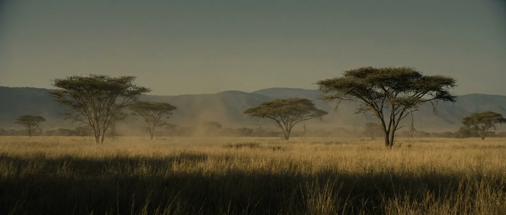

Grass spreads across the continents and takes the world with it. Open savanna replaces closed forest, grazing animals get fast and hard-toothed, and the ancestors of everything in a modern zoo take shape. By the end of it, our own genus is walking around East Africa.
This is effectively your planet with the wrong animals on it. Air, climate, plants and seasons all sit within the range humans handle. What is missing is anything domesticated: every grass here is wild, small-seeded and unimproved.

Scale 0–40%. Identical to today.
Scale 0–4,000 ppm. At or slightly below the pre-industrial value. The Neogene is the first era whose air chemistry you would find completely unremarkable.
C₄ grasses expand rapidly from about 8 Ma, likely favoured by falling CO₂ and increasing fire. Open landscape is the habitat our own lineage is built for.
Scale −20 to 250 °C. A degree or two above modern and falling. Antarctic ice is established; northern ice sheets begin near the end.
Scale 0–24 h. Within minutes of your own.
Scale 0–30 m. Present until roughly 3.6 Ma. A strong argument for staying out of warm coastal water, and no argument at all against living on land.
Open grass, scattered trees, seasonal rain, a normal sky. This is the landscape our own genus evolves in a few million years later, and it feels correct in a way none of the previous fifteen pages do.
Sabre-toothed cats, bear-dogs and hyaenids work exactly the terrain you are standing in. This is the first era where you are the right size, shape and speed to be ordinary prey. Fire and numbers are the answer, as they have always been.
Grass seeds are here in quantity and they are tiny, hard-shelled and shatter off the stalk before you can gather them. Wheat and rice are the product of thousands of years of selection. Neogene grain is a lot of work for very few calories.
Game, fruit, roots, nuts, fish, eggs. Hard, seasonal, and demonstrably survivable — it is how every human lived until about 12,000 years ago.
The Neogene has no environmental limit on your lifespan. It is a foraging problem and a predator problem, both of which humans solved without any technology you do not already understand.
You do, comfortably. This is the second-best entry on the site.
Modern.
Seasonal in the savanna belts, permanent along rivers. Read the landscape the way you would in East Africa today.
Grazing herds, fruit, tubers, nuts, fish, eggs. Everything except a cultivated staple.
Easy, and now essential — it is your main defence against everything with teeth.
Timber, thatch, hide, clay. Whatever you know how to build, you can build here.
None. Every plant is wild. Domestication is the one technology this era is genuinely missing.